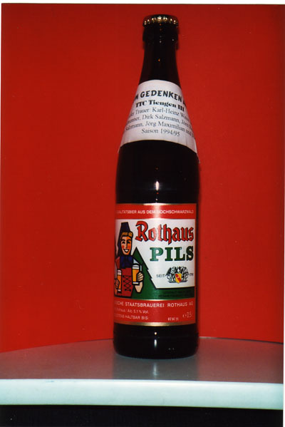
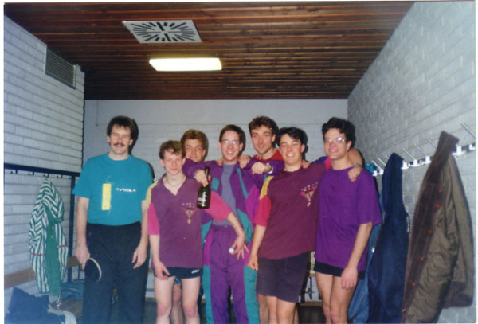
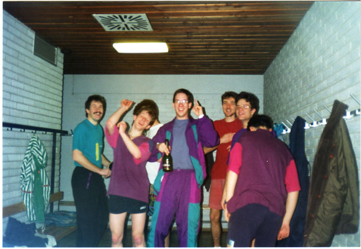
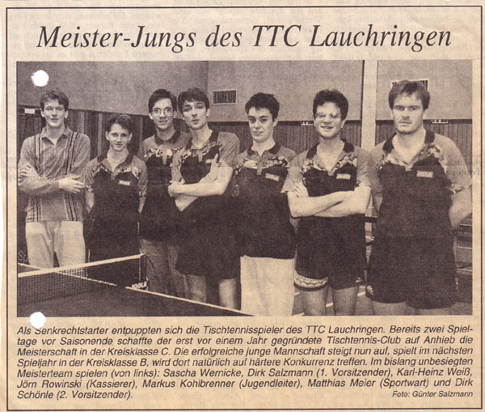
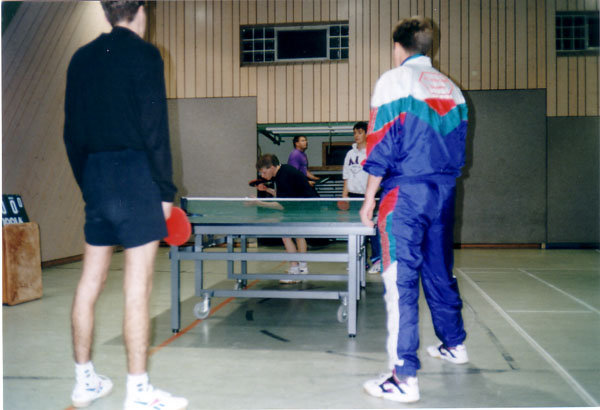

Von einer Bierflaschen-Gründungsurkunde zur etablierten Tischtennisgemeinschaft – die Geschichte des TTC Lauchringen seit 1995.

Die „Gründungsurkunde" des TTC Lauchringen


v.l.: Gerd Schönle, Dirk Salzmann, David Zerjeski, Karl-Heinz Weiss, Jörn Rowinski, Markus Kohlbrenner, Matthias Meier

„Meister-Jungs des TTC Lauchringen" – Pressebericht
